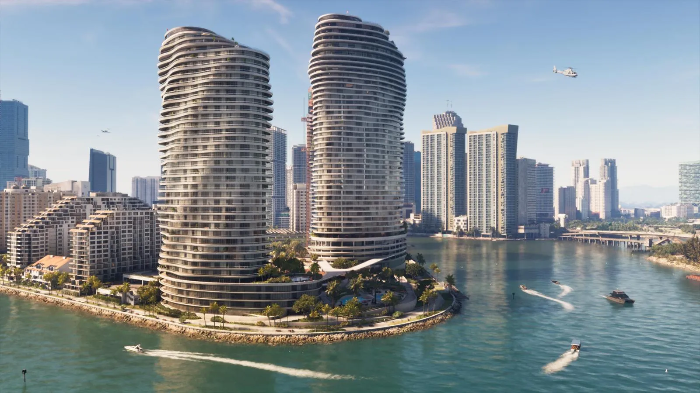

VCIA Takedown: прохождение миссии GTA 6
Опубликовано:

Коротко
- Ограбление аэропорта VCIA — главное дело главы 4. Команда Корделла грабит хранилище, а люди Рауля едут с ними, чтобы забрать добычу себе. Лусия работает в терминале под видом сомелье, Джейсон — на крыше, на лётном поле и в долгой погоне.
- Глава 4, миссия 23 из 26. Играем за: Джейсон и Лусия.
- Награда: $250 000, трофей Hi-Jacked; LMG-6 Франсиско — если подобрать.
Миссия коротко
| Глава | 4. Vice City, Baby |
| Номер в сюжете | 23 |
| Играем за | Джейсон и Лусия |
| Кто даёт | Рауль Баутиста |
| Где начинается | Вайс-Сити, Stockyard |
| Условие | все подготовительные задания (и Джейсона, и Лусии) и Headliners |
| Награда | $250 000, трофей Hi-Jacked; LMG-6 Франсиско — если подобрать |
| Переиграть | нельзя — сохраняйтесь вручную |
Где начинается
Прохождение по шагам
- Лусией идите за Нейтом через аэропорт; Джейсоном отгоните фургон кейтеринга к грузовому терминалу.
- Лусией вырубите Дженис в туалете — подойдите сзади и нажмите R2 (RT).
- Идите за управляющим хранилищем в лифт и ответьте на его вопрос.
- Джейсоном на крыше (5 минут) доберитесь до центральной метки: охрану — пистолетом с глушителем или рукопашной R2 (RT); в клетке используйте терминал.
- Лусией в хранилище подойдите к ящику вина, по подсказке ударьте управляющего, вернитесь и нажмите обе кнопки ворот.
- Джейсоном вырубите Омара R2 (RT) и спрячьте его в отмеченный контейнер.
- Лусией отвезите багаж на тележке к самолёту у южного терминала и погрузите сумки.
- Отбейтесь от полиции на поле — сначала Джейсоном, потом Лусией у самолёта.
- Прыгайте в грузовик и догоняйте самолёт: держитесь справа у шасси, чтобы запрыгнуть.
- Догоните грузовик до шоссе, объезжая полицию; в рукопашной на трассе Лусия бьёт до победы.
- Когда из кузова бросают вещи, стреляйте в Focus — L3+R3.
- В самолёте пробейтесь в кабину; если схватят — □ (X).
- Прикройте Андреа на земле, пока она грузит сумки; при желании возьмите LMG-6.
- В самолёте за Лусию держите R2 (RT) и тяните левый стик вниз до посадки.
Советы
- Рукопашные нокауты не поднимают тревогу — на крыше и в хранилище это лучший способ.
- Омара после аварии грузовика лучше ранить в ногу или вырубить — бонус Professional.
- Разговор с управляющим в лифте — единственный выбор в диалоге.
Подробности и секреты
- Перед стартом нужны все подготовки: Making Gainz, Blood Sweat and Gear, Too Much Baggage, Amateur Hour, Cash Injections, Dirty Work, а также Headliners; старт — Start the Airport Heist в комнате планирования Рауля (finalboss, theclick).
- В лифте менеджер хранилища задаст вопрос про вино — отвечайте как сомелье (GTA6 WikiDB).
- На крыше у Джейсона 5 минут до сетевого терминала в клетке; охрана стоит на возвышениях — мимо них не бегите, снимайте тихо (gtabay, GTA6 WikiDB, vifieldguide).
- По данным gta6heists, если Джейсона заметят снайперы NOOSE, миссия провалится; оглушённого грузчика Омара спрячьте в багажный контейнер.
- Мешки с деньгами грузите по одному на ленту погрузчика у самолёта на южном терминале (GamesFuze).
- Финал: погоня за самолётом на грузовике, драка с Райной, остановка грузовика (бонус Professional), пулемёт LMG-6 Франсиско и посадка самолёта (vifieldguide). Награда — $250 000 и трофей Hi-Jacked (gta6heists, gta6wikidb).
Что можно пропустить
Подготовительные задания есть и у Джейсона, и у Лусии — без всех миссия не откроется. Пулемёт LMG-6 Франсиско можно не подобрать.
Частые вопросы
Сколько платят за VCIA Takedown?
$250 000, плюс трофей Hi-Jacked.
Что нужно для VCIA Takedown?
Пройти все подготовительные задания обоими героями (Close Surveillance, Delivery Method, Team Building, Fully Catered) и Headliners.
Как запрыгнуть в самолёт в VCIA Takedown?
На грузовике держитесь справа, у шасси.
Сколько дают за VCIA Takedown?
$250 000 и трофей Hi-Jacked.
Сколько времени на крышу в VCIA Takedown?
5 минут, чтобы Джейсон добрался до сетевого терминала.
Источники: PowerPyx, «GTA 6 VCIA Takedown Walkthrough», 18–19.11.2026; Game8, Sportskeeda, finalboss, gta6heists, GamesFuze, GTA6 WikiDB, gtabay, vifieldguide, theclick, skycoach — VCIA Takedown, 20–28.11.2026. Кнопки указаны для PS5, в скобках — Xbox. Названия миссий — как в английской версии игры.